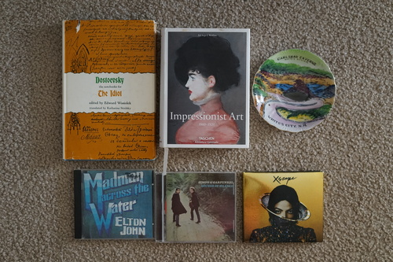

I added an RSS feed! Idk where to link to it on my site yet. Maybe I'll actually mention what I'm updating now instead of having everyone go search for a minor change.
We finally watched Drive together! When he drove into the AX parking lot, I really felt that. I want Ryan Gosling to steal my wife.
Ryan and I had a very small thrift haul from our walk. He went to the bookstore and found two books! I found 3 CDs for myself.
Recently I heard a song I recognized but didn't know the name of on the radio. I used my cool cell phone to shazam the song and find out it was a 2022 song?! no. It was Tiny Dancer.
It's posthumous so I'm not sure it'll be worth owning. The price was right to find out, but I don't have much hope for anything released from the grave.
I made 2 videos lately! I have a SD13B stringing video and a brand spankin new KJ Kiki box opening! Please check them out if you're interested! Maybe some of you are interested in how these dolls are strung even if you aren't particularly interested in them.
Back in the early days of Migidoll, there used to be 4 resin tones you could purchase in. She had not sculpted a body yet, so you had to purchase a body separately from another company. You could choose Volks matching or Lati matching resin and white or normal skin. I know Liam is white skin, but I do not know if he is Volks or Lati matching.
A couple weeks ago, I sent an email to Migi of Migidoll. I gave her all the information I knew about Liam's purchaser and probable order date. I was hopeful she would have record of the order with the resin tone he was cast in. She was seriously way too sweet, but wasn't able to tell me, because the purchaser only had ordered a normal skin Ryu from her.
This is strange. His original owner did have both a NS and WS Ryu. I was under the impression she had purchased the WS one from Migidoll and the NS from a seller on DoA. I spent a couple days going through her old deviantArt and DoA posts trying to figure out what the heck was going on. I saw that the original owner of her NS Ryu was someone who was still active. I messaged her and asked if she knew anything, but she initially didn't remember. I jogged her memory a bit and she said the head would have been NS, not WS. The owner between them also said he was Lati matching NS in a Flickr post AND the NS Ryu still had the same faceup between this owner and the girl I bought Liam from.
All of my research has led to her having 2 NS Ryu and 0 WS Ryu. If I didn't own a Volks matching NS Miho, I would probably just believe my Ryu is actually NS at this point.
In the end, I did find a post of her asking for Migi/Volks WS resin matches a bit before the feedback for his iplehouse body split was posted. I think that's enough for me to believe he's Volks matching. The mystery of where he came from is no where near solved though. In fact, now I'm more confused than ever.